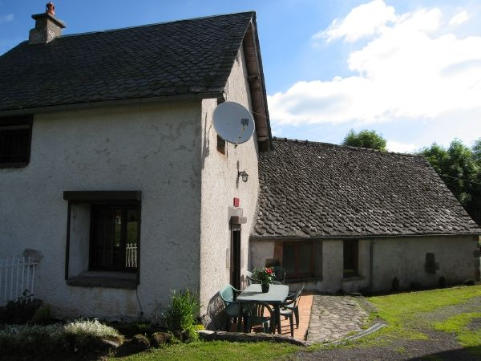

4 personnes · 30 m²
Gîte du four à pain
Un ancien four à pain restauré, sur deux niveaux.
- Cuisine équipée et salon-salle à manger
- Chambre en mezzanine (lit 140) et chambre avec lits gigognes
- Salle de bains et WC